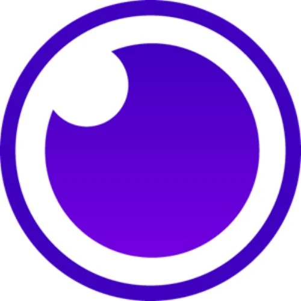
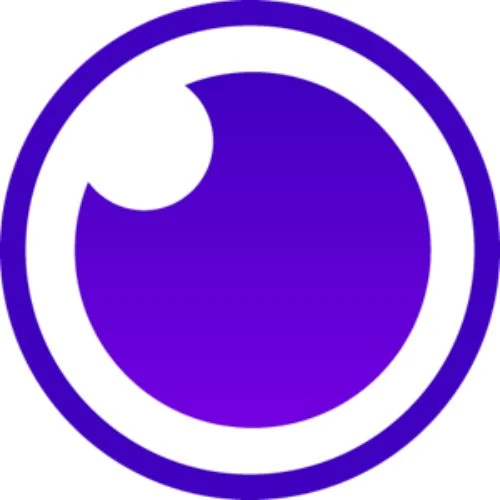
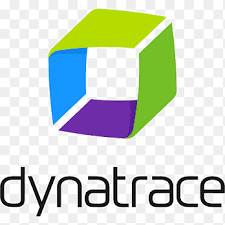
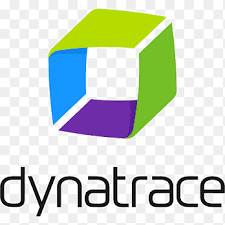
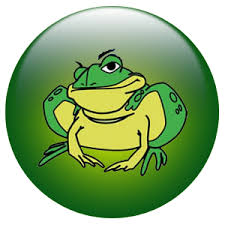
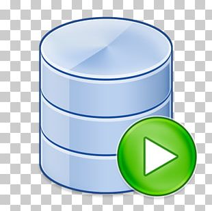
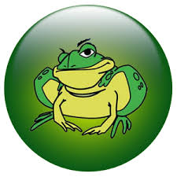
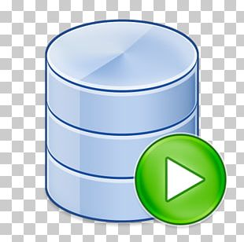
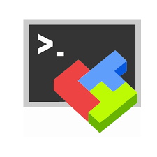
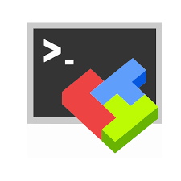

Luis Gerardo Martínez
Ingeniero de Telecomunicaciones
Formación
Ingeniero en Telecomunicaciones (2015) · TSU en Electrónica (2010)
Cursos: Selenium, Cypress, Dynatrace, SwiftUI, Node.js
Ingeniero de Telecomunicaciones
Ingeniero en Telecomunicaciones (2015) · TSU en Electrónica (2010)
Cursos: Selenium, Cypress, Dynatrace, SwiftUI, Node.js
May de 25 - presente

Feb de 23- presente
Nov de 2021- Feb 2023

Enero de 2021
Enero de 2019

Disfruto de la sensación de libertad que me brinda al pedalear por paisajes variados, ya sea en senderos tranquilos o en rutas urbanas.
Leer más
Desde que era pequeño, los videojuegos han sido una fuente inagotable de diversión y creatividad para mí. Leer más
HTML
CSS
JavaScript
TypeScript
Angular 17
RxJS
Tailwind CSS
Sass (SCSS)
Responsive Design (RWD)
Accesibilidad (WCAG/ARIA)
APIs REST/JSON
Cypress
Playwright
Jest
Vite
Git (branching, PRs)
GitHub Actions (CI/CD)
Swift
SwiftUI
Jira, Azure DevOps
qTest (trazabilidad, evidencias)
HP ALM / ALM QC
Test Design (E2E, Regresión, Smoke/Sanity)
BDD (Gherkin)
Postman (colecciones, CSV, runners)
Cypress
Playwright
JMeter (performance básico)
Python (scripting QA)
Dynatrace
Splunk / Kibana
Docker
Kubernetes
GitHub / GitLab / Bitbucket
CI/CD (GitHub Actions, Jenkins)
BMC Control-M
SQL (queries/joins)
Oracle SQL Developer
MongoDB
Comunicación: informes claros, evidencias reproducibles, feedback accionable.
Colaboración: trabajo cross-team con Dev, Producto y Negocio; participación en ágiles.
Pensamiento analítico: priorización por riesgo, diagnóstico y propuesta de soluciones.
Gestión del tiempo: foco en entregas, manejo de releases y multitarea.
Aprendizaje continuo & mentoría: compartir buenas prácticas y elevar el estándar del equipo.
Node.js (TypeScript)
Python (scripting)
Express.js · Clean Architecture
Prisma ORM
REST APIs · OpenAPI/Swagger
Auth: JWT / OAuth2 · Firebase Auth
Postman / Insomnia (collections, envs)
PostgreSQL (SQL/joins)
MongoDB
Redis (caching básico)
Docker · Docker Compose
CI/CD (GitHub Actions)
Linux · Bash / PowerShell
JMeter (performance básico)
Udemy — 2024
SocialOplesk — 2022
SocialOplesk — 2021
LinkedIn Learning — 2020
Universidad UNEFA — 2006–2014
Universidad UNEXPO — 2005–2009

 

 



 





 



Soy Ingeniero en Telecomunicaciones y QA Engineer con foco en garantizar calidad, confiabilidad y experiencia de usuario en productos web y móviles, especialmente en banca y medios de pago. Combino pruebas manuales y automatizadas a lo largo del ciclo de desarrollo, colaborando con desarrollo, producto y negocio para entregar software estable y medible.
Trabajo con Postman (colecciones, scripting, parametrización con CSV, runners), qTest (trazabilidad, reportes y evidencias), Dynatrace (APM/performance) y Splunk (observabilidad y análisis de logs). Valido datos con SQL y MongoDB, diseño regresiones risk-based y realizo pruebas de accesibilidad (ADA/JAWS). Trabajo en marcos ágiles (Daily, Refinement, Sprint Review), cerrando criterios de aceptación temprano para reducir retrabajos.
Me orienta la mejora continua: definición de KPIs de calidad, reducción del tiempo de feedback, priorización de escenarios críticos y evidencias reproducibles. Disfruto la mentoría y la difusión de buenas prácticas de QA/automatización; creo en equipos con autonomía, datos a la vista y entregas frecuentes.
En paralelo, me estoy especializando en iOS y Front-End. Desarrollo proyectos en SwiftUI, estudio patrones de arquitectura y accesibilidad, y experimento con Cypress/Playwright, JMeter/Dynatrace y scripts en Python para automatizar tareas de testing. Mi objetivo es crecer hacia QA Automation/SDET y, en paralelo, avanzar como iOS Developer Junior.
Me identifican la disciplina y el aprendizaje continuo. Con base en Buenos Aires. Disponible únicamente para roles 100% remotos (UTC−3).
Keywords: QA Automation · API Testing · Postman · qTest · Dynatrace · Splunk · SQL · MongoDB · Accesibilidad (ADA/JAWS) · Agile/Scrum · Regression/E2E · CI/CD · SwiftUI · Cypress/Playwright · JMeter · Python (scripting).
Responsable de la calidad en soluciones web y móviles del ecosistema Fiserv (Merchant Center, Club Fiserv, PosNet App). Ejecución de pruebas en QA y Producción con foco en estabilidad, confiabilidad y UX.
Tipos de pruebas: Smoke, Sanity, Regresión, Stress, Performance y Load.
Automatización: Postman (colecciones, scripting avanzado, parametrización con CSV).
Gestión de pruebas: qTest (evidencias, reportes, trazabilidad).
Monitoreo y diagnósticos: Dynatrace, Splunk, logs y análisis de performance.
Bases de datos: SQL y MongoDB (validación y generación de datos de prueba).
Pruebas de accesibilidad: ADA / JAWS.
Certificación de releases en QA y Producción.
Metodología: participación en ceremonias ágiles (Daily, Refinement, Sprint Review).
QA para aplicaciones bancarias con foco en mainframe, regresiones de front web y validación de integraciones críticas. Gestión de issues y trazabilidad en Jira y Azure DevOps, soporte en releases e interacción constante con equipos ágiles para asegurar calidad y cumplimiento regulatorio en un entorno de alta exigencia.
Diseño, ejecución y optimización de casos de prueba para validar nuevas funcionalidades y regresiones. Registro, investigación y documentación de defectos en Office 365, Azure DevOps y Jira, con trazabilidad end-to-end. Validación y certificación de implementaciones en entornos de prueba y producción, asegurando precisión de datos y cumplimiento normativo. Pruebas de APIs y servicios internos con Postman e Insomnia. Validación de datos con Oracle SQL Developer, creación y administración de usuarios de prueba y datos semilla para escenarios funcionales. Apoyo en integraciones con sistemas legados y validaciones en host (mainframe). Gestión de repositorios de código en GitHub, GitLab y AWS para soporte de pruebas automatizadas y control de versiones. Participación en ceremonias ágiles (planning, refinamiento, retro) y acompañamiento en deploys y controles de calidad de releases.
QA para el sector asegurador con foco en diseño, ejecución y automatización de pruebas funcionales, de rendimiento y seguridad. Colaboración directa con equipos de desarrollo y stakeholders para asegurar el cumplimiento regulatorio y de negocio en un entorno ágil.
Desarrollo de casos de prueba end-to-end para validar características críticas del software. Seguimiento y resolución de incidentes mediante Office 365 y Jira Software. Identificación y documentación de defectos, con trazabilidad completa hasta su resolución. Validación y certificación de implementaciones de software, garantizando precisión y cumplimiento normativo. Monitoreo de historias de usuario y validación de funcionalidades en ambientes de demostración. Soporte en despliegues de prueba y producción, con integración y automatización a través de Jenkins..

QA para IT Wallet, con foco en pruebas funcionales, de integración y seguridad, así como en la automatización para mejorar la eficiencia y la gestión de incidencias. Colaboración directa con equipos de negocio y desarrollo para garantizar calidad, escalabilidad y continuidad operativa.
Administración y despliegue de servicios en AWS; gestión de proyectos y trazabilidad en Jira. Diseño y ejecución de pruebas manuales y automatizadas (exploratorias y de regresión). Gestión y validación de datos en MS SQL (DBeaver, Toad) y emulación de APIs con Postman. Monitoreo de aplicaciones y servicios con Kibana, Kubernetes Dashboard y Dynatrace.
QA de integración durante la fusión de Fibercorp, Cablevisión y Fibertel (Telecom Argentina), con foco en análisis de requisitos, diseño y ejecución de pruebas de integración y validación de interoperabilidad entre sistemas críticos. Participación en proyectos de gran escala que involucraron migración de CRM, servidores y líneas operativas, asegurando continuidad de negocio y estabilidad de la plataforma de ventas.
Ejecución de pruebas de front de Salesforce (ventas de celulares y accesorios) y validación de procesos comerciales. Gestión de sistemas Unix (Putty, MobaXterm) para comandos de operación y migración entre servidores. Automatización de tareas críticas con BMC Control-M, reduciendo procesos de 2 días a horas de ejecución. Validación de APIs y servicios mediante SOAP UI. Revisión de documentación y trazabilidad de pruebas con HP ALM. Acompañamiento en controles de cambio nocturnos, migraciones complejas y resolución de issues en tiempo real.